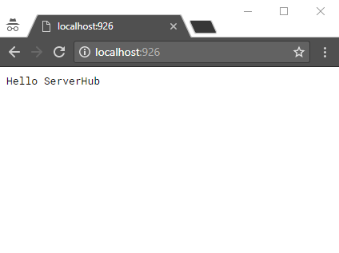

An Hello World Example for ServerHub
In this chapter, I will give you a very simple helloworld example for ServerHub static services. Feel free to leave issues or prs.
Set up your working directory
Your working directory is suggested to be as clean as possible in this helloworld example. Or you can create a new folder as the project directory:
mkdir serverhub-helloworld && cd serverhub-helloworldNow, initialize your directory with
npm.
npm initOr, you can just skip nagging prompt by add
-y option to
npm init command.
Install ServerHub
In order to correctly install and run ServerHub applications, you MUST have Node.js installed (which will also install npm for your machine).
There is something that I need to stress:
never try to install ServerHub by clone GitHub repository if you don't want to read the source code (Because
there will be some dependencies missing and you have to install them manually). Instead, the best and simple
way is to use
npm.
npm install --save serverhub-mvcDone! Now you have serverhub installed in your working directory.
After that, your directory looks like the following:
- serverhub-helloworld/
- node_modules/
- app.js // entry of server
- package-lock.json
- package.json
Edit
app.js
First of all, we need to import serverhub. And then we call
Run() method to set up ServerHub.
The modified code should look like this:
const serverhub = require('serverhub-mvc');
serverhub.Run({
BaseDir: __dirname
});Now, run application with
node app.js. Then go to your favorite browser and checkout "http://localhost:926". There might be an 404 page shown.

Good job! Now, your first ServerHub app is running correctly!
Extended Example of Hello World
In previous section, we managed to start the server app but it only returns an 404 page. We definitely don't want to show a missing message. So in this section, we will dive into ServerHub controllers and web directories.
Add your first controller
In default, ServerHub treat "controller/" at same directory of
app.js as the controller directory. So, we create such folder and create a file named
home.js. But don't worry, you will have chance to assign a new value for it.
And here is the content:
return {
index: function (req, res, method) {
res.write('Hello ServerHub');
res.end();
}
}Restart serverhub and checkout browser.

Why this page shows up? We didn't change the URL in browser!
And this is how ServerHub route works. It defaultly dispatchs the "index" action defined in "home" controller and displays the operated data. Try to make some change in home.js controller. In this situation, URL "/" is equivalent to "/home/index/". Isn't it cool!
After this example
Now we've gone through the whole example of ServerHub helloworld. Have you learnt how to build a simple server-side app with ServerHub?
For more guides and documents, visit doc page.
Contributions of this chapter
Yuyang Mao Suggested to provide this helloworld example for ServerHub.